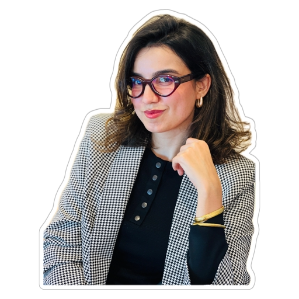

Creator ID ✳
Ghada Mezghanni
Social Media Manager & Media Coordinator
Strategy into stories
Thoughtful content. Creative storytelling.
Bringing brand stories to life.

Experience across media & brands
About Ghada
I’m a Social Media Manager with a background in media, communications and digital marketing, based in Abu Dhabi.
I bring together content planning, copywriting, creative briefing and production coordination to translate brand objectives into stories that capture attention and build engagement.
I’m interested in the evolving role of AI in the creative industry, using it to support research, ideas and everyday workflows while keeping human storytelling at the core.
Download my CV ↓Social Media Manager & Media Coordinator
“Thoughtful content. Human stories.”
Selected experience
A selection of projects and responsibilities from my professional journey.
Content calendars, social copy, scripts, creative briefs and creator coordination, from awareness to conversion.
Production coordination for “The Fog Island,” filmed across Abu Dhabi, Dubai and Thailand, and a public-awareness campaign with Abu Dhabi Police.
Brand voice, slogans, campaign narratives and promotional copy supporting product launches and customer communications.
Expertise
Creative ideas, clear messaging and coordinated delivery across teams, channels and languages.
Editorial planning, content calendars, funnel-based content and brand messaging.
Captions, scripts, campaign narratives, creative concepts and multilingual editorial content.
Schedules, shoots, stakeholder communication, production workflows and project reporting.
Arabic, English and French content; Arabic–English localization, subtitles and script translation coordination.
Research, ideation, content development and structured client proposals.
Canva · Adobe Premiere Pro · Adobe Photoshop · Adobe Acrobat · ClickUp · CMS platforms · Genspark · Microsoft Office
My journey
Solved6 · UAE
FilmGate Productions · UAE
BionexLab · Tunisia
BionexLab · Tunisia
Albert-Learning · France · Remote
Blue Pixel Studios · Dubai · Remote
M&C Saatchi World Services · London · Remote
Prod of Me · Morocco · Remote
Qatar · Remote
Education
Higher Institute of Languages in Gabes, Tunisia · 2019–2021
Higher Institute of Applied Languages in Mahdia, Tunisia · 2015–2018
Certificates & courses
Languages
Arabic: native · English: fluent · French: proficient
Let’s connect
Let’s talk content, creativity and your next project.
ghadamezghani75@gmail.com+971 50 732 6216